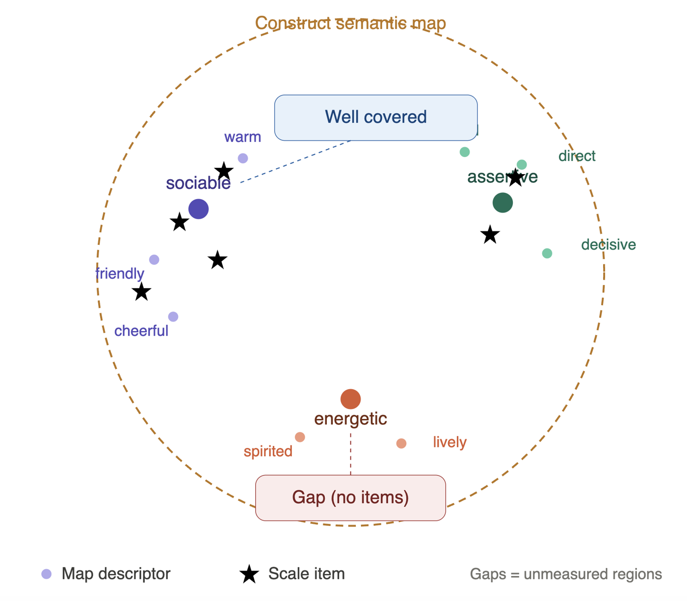
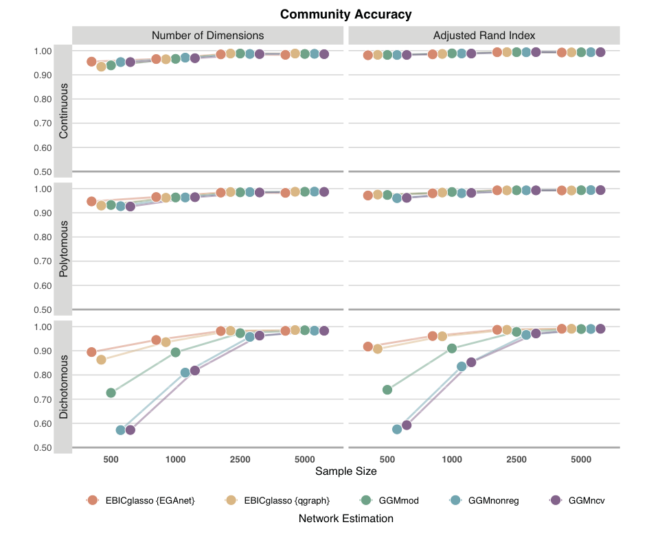

I am a Ph.D. candidate in Psychological Sciences (Quantitative Methods and Data Analytics) at Vanderbilt University with a doctoral minor in Biostatistics, advised by Alexander Christensen. My dissertation develops construct semantic maps using item embeddings and network psychometrics. This summer I am a psychometric research intern at Edmentum.
My research develops and evaluates quantitative methods, including:
- Network psychometrics: accuracy, generalizability, and data-adaptive regularization
- Large language model embeddings and generative psychometrics
- Tetrachoric and polychoric correlation estimation
- Machine learning for methodological research (classification trees, mixture models, GLMM-trees)
On the substantive side, I study how K-12 students and adult learners learn and experience education. I am particularly interested in applying quantitative methods to mathematics learning and math education, longitudinal trajectories of learning and development, data generated from learning processes, and the integration of AI and education.
I am on the 2026–2027 job market (expected graduation: May 2027) and am seeking opportunities in the United States in psychometrics, measurement, quantitative methodology, and data science.
Featured Research

Construct Semantic Maps (Dissertation)
Combines large language model item embeddings with network psychometrics to map the semantic space of a psychological construct, revealing coverage, redundancy, and gaps in existing scales.
Dissertation in progress
Network Accuracy Across Levels of Analysis
A large-scale simulation using stochastic block models showing where common network estimation methods succeed and break down across data types and sample sizes.
Psychological Methods (2026, online first) · ArticleEducation
- Ph.D. in Psychological Sciences (Quantitative Methods and Data Analytics), Vanderbilt University (2022 – expected May 2027)
Doctoral Minor in Biostatistics - M.Ed. in Education (Educational Measurement and Statistics), Korea University (2018 – 2020)
- B.S. in Mathematics Education, Ewha Womans University (2014 – 2018)
News
- Presenting a poster at the APA Annual Convention (Washington, DC).
- “Network accuracy across levels of analysis using stochastic block models” (with Alexander Christensen) is now online first at Psychological Methods.
- Paper on GLMM-trees for modeling heterogeneous cognitive-aging trajectories published in Frontiers in Psychology.
- Coauthored work presented at IMPS (Seoul, Korea).
- Started a summer psychometric research internship at Edmentum.
- Presented at the NCME Annual Meeting (Los Angeles, CA).